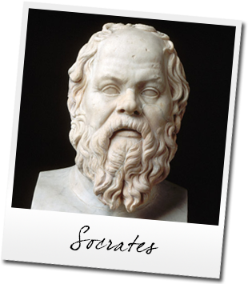

Socrates (469/470-399 BCE) was a Greek philosopher and is considered the father of western philosophy. Plato was his most famous student and would teach Aristotle who would then tutor Alexander the Great. By this progression, Greek philosophy, as first developed by Socrates, was spread throughout the known world during Alexander's conquests.
Socrates was born c. 469/470 BCE to the sculptor Sophronicus and the mid-wife Phaenarete. He studied music, gymnastics, and grammar in his youth (the common subjects of study for a young Greek) and followed his father's profession as a sculptor. Tradition holds that he was an exceptional artist, and his statue of the Graces, on the road to the Acropolis, is said to have been admired into the 2nd century CE. Socrates served with distinction in the army and, at the Battle of Potidaea, saved the life of the General Alcibiades.
When he was middle-aged, Socrates' friend Chaerephon asked the famous Oracle at Delphi if there was anyone wiser than Socrates, to which the Oracle answered, "None." Bewildered by this answer and hoping to prove the Oracle wrong, Socrates went about questioning people who were held to be 'wise' in their own estimation and that of others. He found, to his dismay, "that the men whose reputation for wisdom stood highest were nearly the most lacking in it, while others who were looked down on as common people were much more intelligent" (Plato, Apology, 22). The youth of Athens delighted in watching Socrates question their elders in the market and, soon, he had a following of young men who, because of his example and his teachings, would go on to abandon their early aspirations and devote themselves to philosophy (from the Greek 'Philo', love, and 'Sophia', wisdom - literally 'the love of wisdom'). Among these were Antisthenes (founder of the Cynic school), Aristippus (the Cyrenaic school), Xenophon (whose writings would influence Zeno of Cithium, founder of the Stoic school) and, most famously, Plato (the main source of our information of Socrates in his Dialogues) among many others. Every major philosophical school mentioned by ancient writers following Socrates' death was founded by one of his followers.